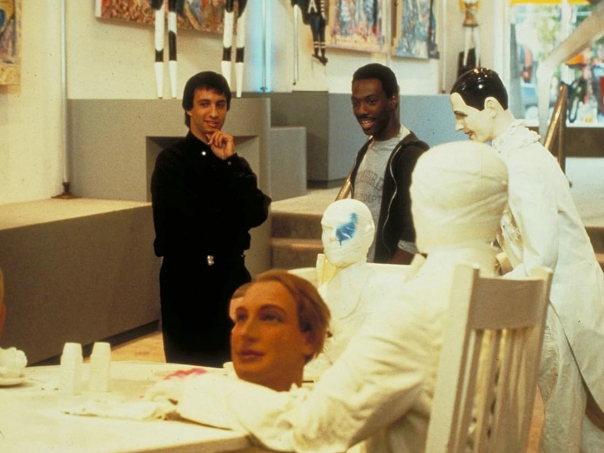
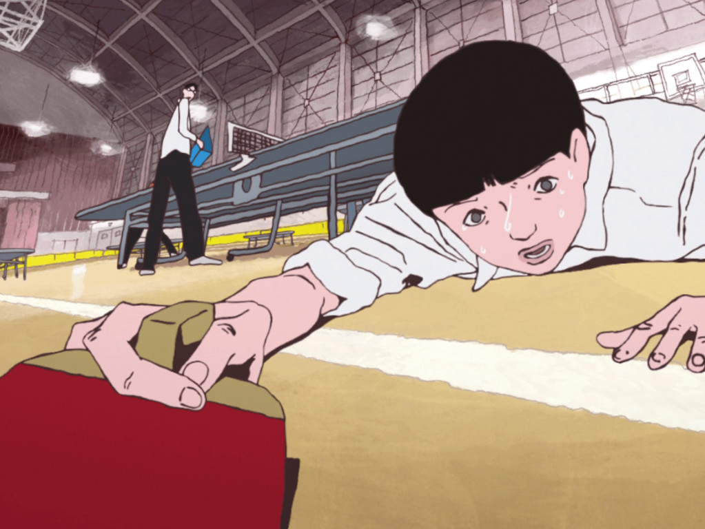
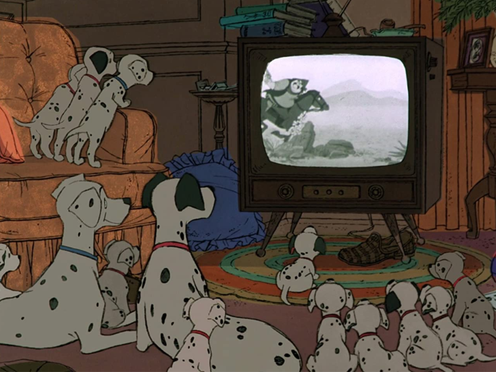
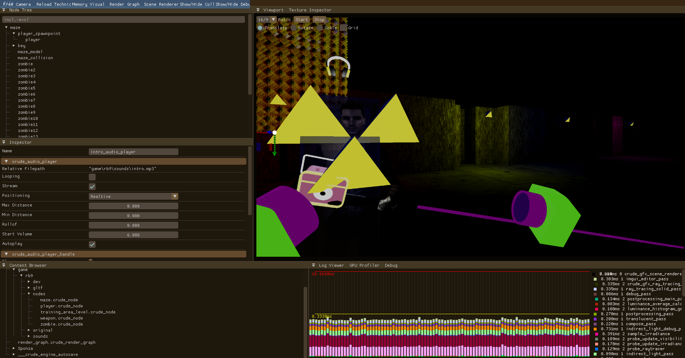
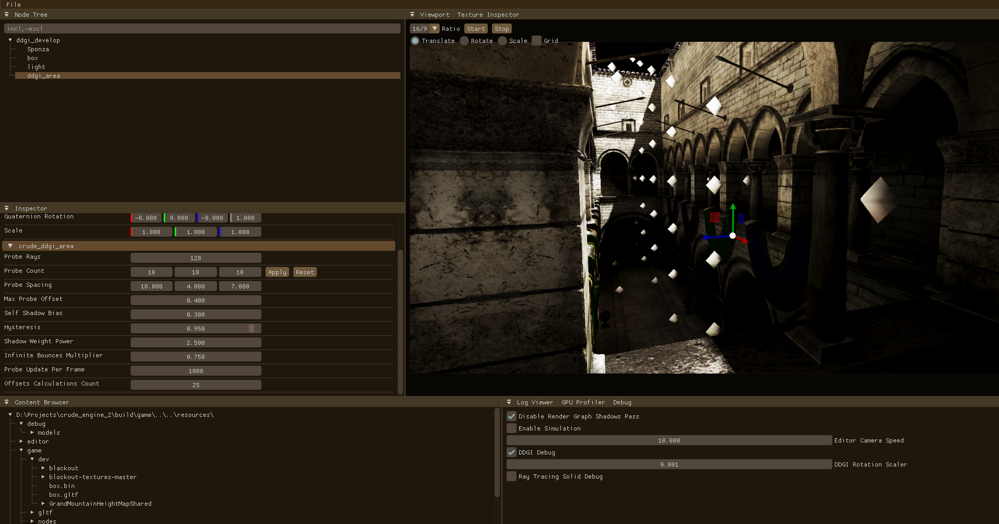

Refactoring, bug fixing, ddgi, basic rhi

A lot of architecture improvements, refactoring, bug fixing, huge editor upgrade, animations, ssr, physics and other stuff

Refactoring, bug fixing, automatic exposure, DDGI (requires some rework in the future)

Render Graph, Clustered Shading, Occlusion Culling, Tetrahedron Shadow Mapping, Asynchronous Resources Loading, Multi-Threading Commands Recording, Json Scene, GLTF Models, GPU Profiler, Shader Hot Reloading, Task/Mesh Shader, ECS, etc
bug fixing, clustered shading, gbuffer, simple lighting
bug fixing, clustered shading, gbuffer, simple lighting
bug fixing, code refactoring, debug tools in shader, conus culling, frustum culling, occlusion culling, compute shader in render graph, imguizmo integration
meshlets rendering, meshlets generation, simple launcher, code refactoring, moved from C99 to C++20, imgui integration, bug fixing, shader hot reload
memory management and basic data structures, resource management, automatic pipeline layout generation, multi-threading commands recording & asynchronous loading, render graph, window management, gltf loader


Development was started at Feb 2025